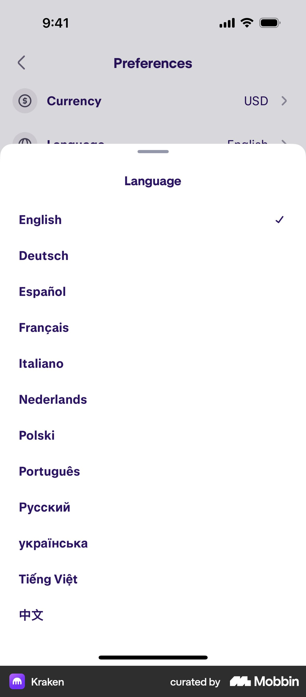
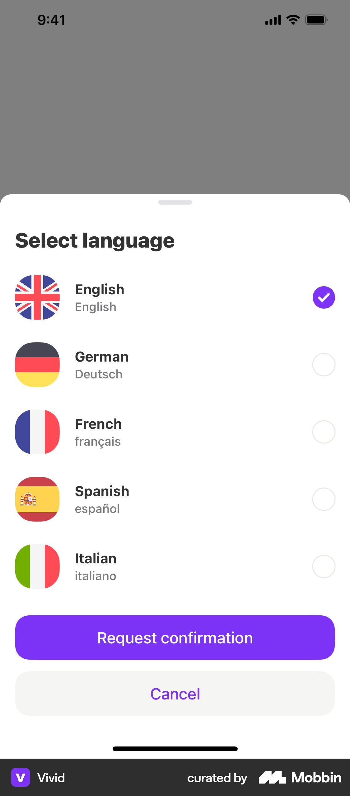
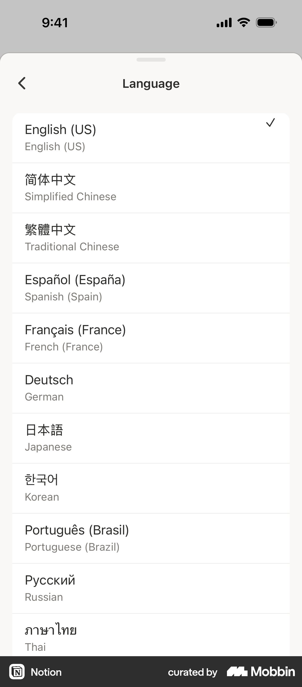
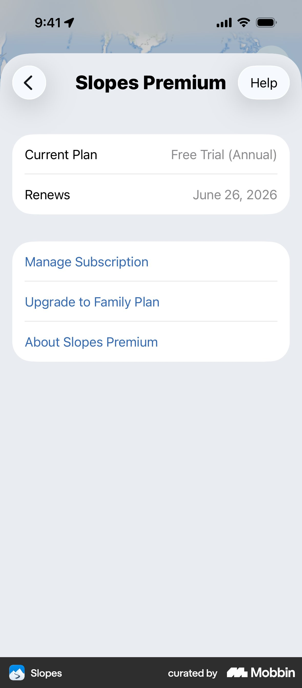
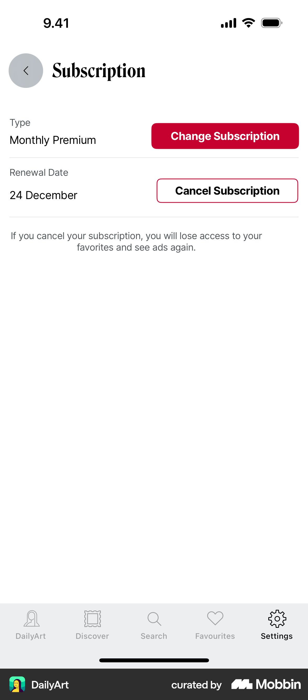
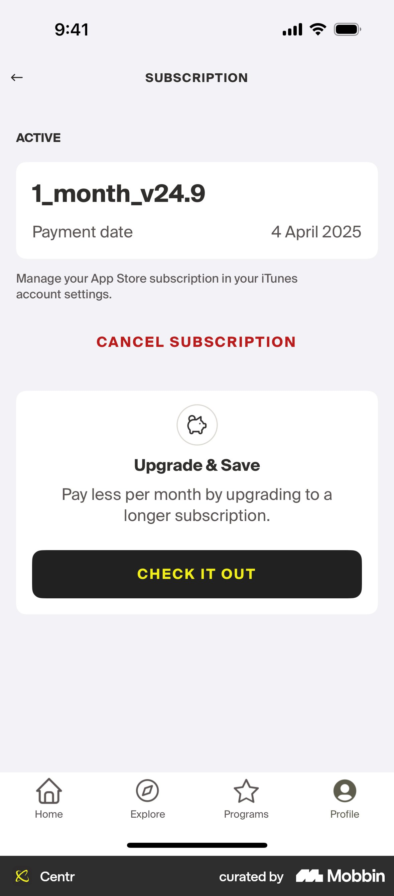

TSK-317에서 새로 그린 언어 선택 시트와 구독 관리 화면의 참고 화면이에요. 모두 Mobbin에서 골랐어요.
우리 안: 제목만 있는 시트에 '기기 설정', '한국어', 'English' 세 줄. 고르면 바로 바뀌고 시트가 닫혀서 '완료' 버튼이 없어요.



우리 안: 위 카드에 상품과 다음 결제일, 아래 카드에 'Play 스토어에서 구독 관리'(앱 밖으로 나가는 표시)와 '구매 복원'.


